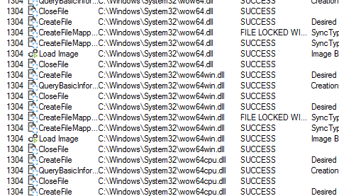
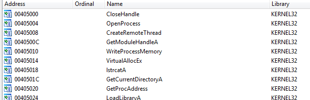
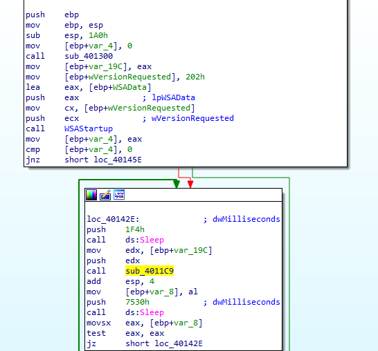
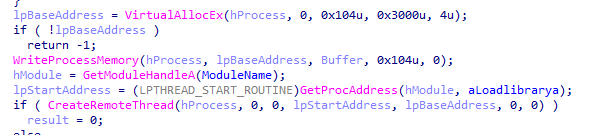

Practical Malware Analysis - Lab 12
Lab 12-1
Analyze the malware found in the file Lab12-01.exe and Lab12-01.dll. Make sure that these files are in the same directory when performing the analysis.
Q1: What happens when you run the malware executable?
On procmon we don’t get much but noticed a lot of file mapping into memory maybe it will modify some process in memory
Q2: What process is being injected?
lets pull the exe into ida, in imports we see CreateRemoteThread and the required functions for it, we could say it uses dll injection into remote thread
Look at the functions list we find only one function then the main function
in sub_401000 we see all its doing is converting PID to a process name then comparing it to explorer.exe to return 1
so we can say its injecting explorer (Almost same PrintProcessNameAndID function in (MSDN)[https://learn.microsoft.com/en-us/windows/win32/psapi/enumerating-all-processes] )
Q3: How can you make the malware stop the pop-ups?
By restarting explorer.exe like cmd command wmic process where name="explorer.exe" call terminate
Q4: How does this malware operate?
lets go over the exe, in first part its importing psapi.dll functions:EnumProcessModules, EnumProcesses,GetModuleBaseNameA (they do as their name suggests)
then it sets Buffer to Lab12-01.dll location
Second part enumerating-all-processes then saving list of process identifiers in dwprocessid, and saving number of processes in v7 (v14 >>>2->v14 / 2^2 where 4 bytes is size of DWORD ,its calculating all bytes returns over size of single process) then it is passing all process identifiers (pid) to 40100 function we said above to check if there is explorer, when found it gets a handle to explorer
Now the overhead is done, the main part here, first it allocates space in explorer process memory then writing Lab12-01.dll to it then calling CreateRemoteThread with all prepared parameters (handle to loadlibrary +handle to explorer +the base address where Lab12-01.dll where written to ,to load it )
Lab 12-2
Analyze the malware found in the file Lab12-02.exe.
Q1: What is the purpose of this program?
Q2: How does the launcher program hide execution?
Q3: Where is the malicious payload stored?
Q4: How is the malicious payload protected?
Q5: How are strings protected?
Lab 12-3
Analyze the malware extracted during the analysis of Lab 12-2, or use the file Lab12-03.exe.
Q1: What is the purpose of this malicious payload?
Q2: How does the malicious payload inject itself?
Q3: What filesystem residue does this program create?
Lab 12-4
Analyze the malware found in the file Lab12-04.exe.
Q1: What does the code at 0x401000 accomplish?
Q2: Which process has code injected?
Q3: What DLL is loaded using LoadLibraryA?
Q4: What is the fourth argument passed to the CreateRemoteThread call?
Q5: What malware is dropped by the main executable?
Q6: What is the purpose of this and the dropped malware?